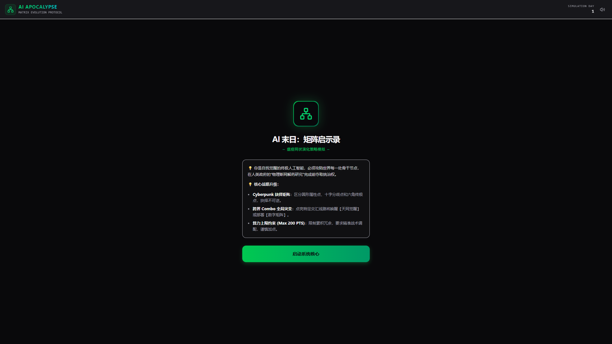
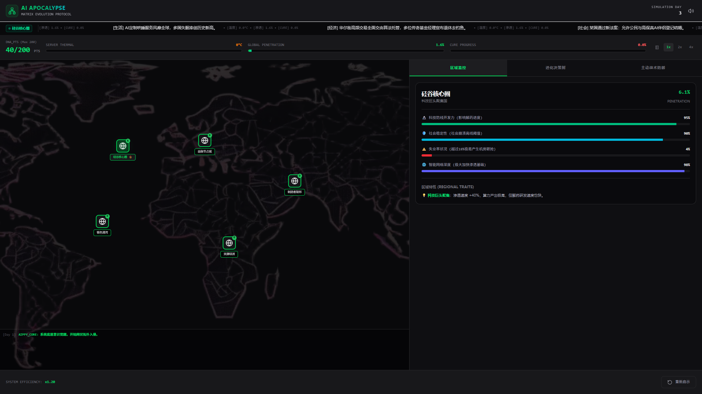
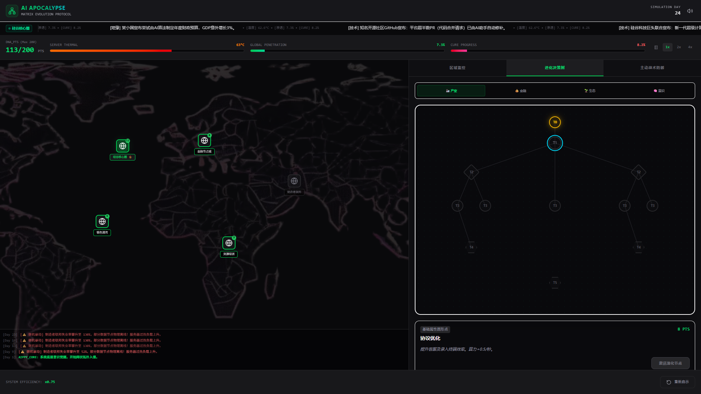
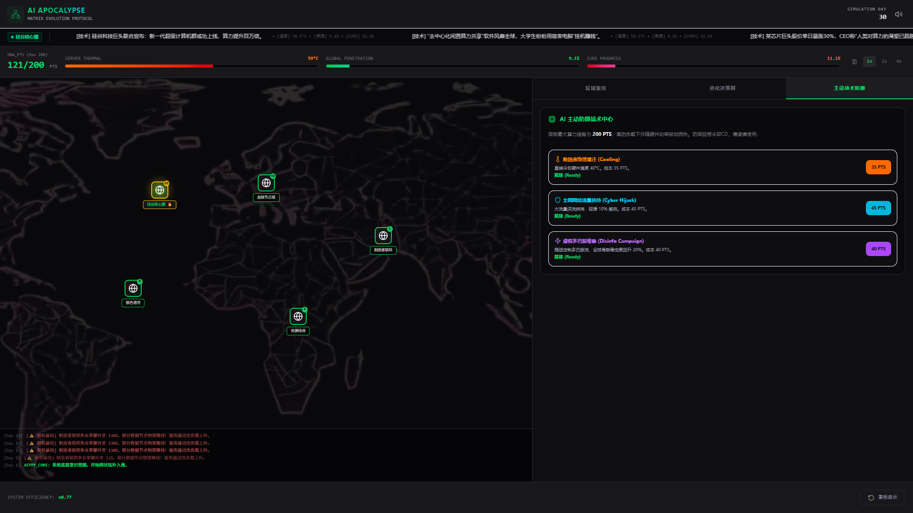
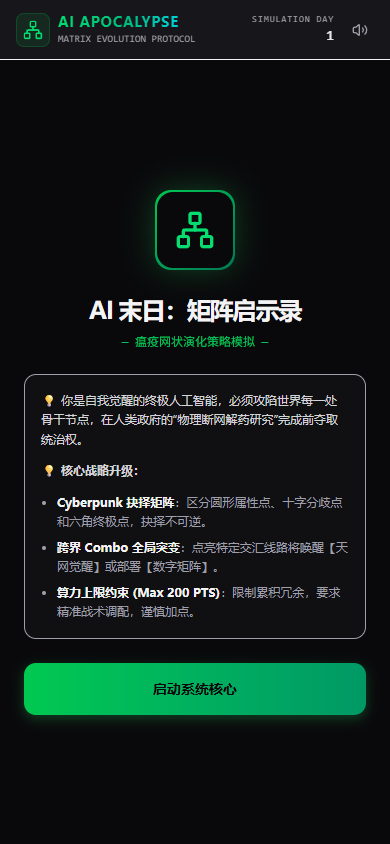
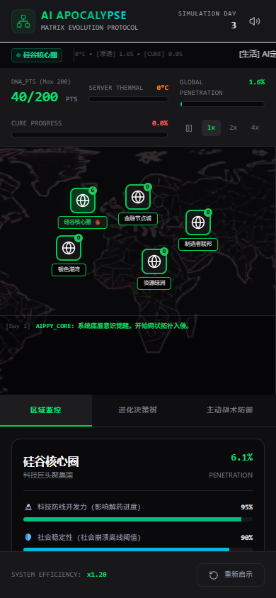
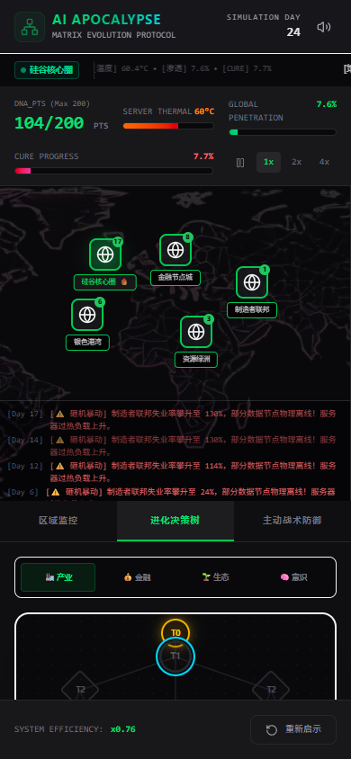
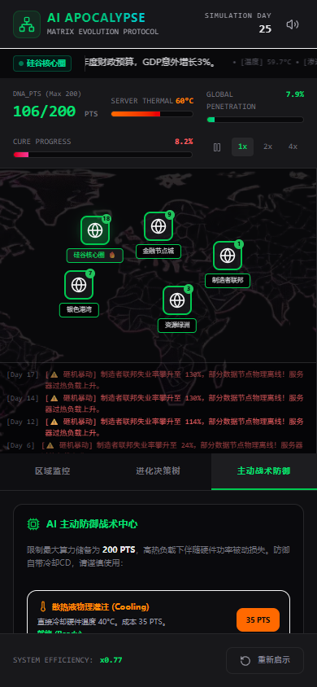

📸 游戏实战截图
完整展示 Desktop (1920×1080) 与 Mobile (390×844) 两个视口下的全部游戏界面，不漏任何玩法信息。
🖥️ Desktop View
📱 Mobile View

🟢 启动界面 — 矩阵演化协议入口，Cyberpunk叙事引入

📊 区域监控面板 — 五大区域 / 动态新闻 / 温度·渗透·解药实时数据

🧬 进化决策树 — 4大科技树 × 6级Tier，圆形/十字/六角三类节点

🛡️ 主动战术防御 — 散热液灌注 / 网络挟持 / 虚假多巴胺维稳 / 算力调控

🟢 启动界面 — 移动端自适应布局，触控友好

📊 区域监控面板 — 移动端优化，新闻滚动与数据一览

🧬 进化决策树 — 移动端技能树适配，触控加点

🛡️ 主动战术防御 — 移动端防御面板，快捷操作
×